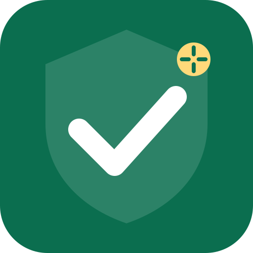

Launch with confidence — the free all-in-one pre-launch check for developers.
Checks the things visitors, contributors and employers look for — README quality, license, CI, community files — using GitHub's own data, including its Community Profile health score. Missing files? ShipCheck writes them for you below the results.
Because launches fail in predictable places, and today each check lives in a different tool — repo doctors are install-only CLIs, dependency scanners are paid SaaS (Snyk, Socket) or single-purpose pages, and DNS checkers show raw records without a launch verdict. The evidence that these checks matter:
ShipCheck is free, unlimited, open source (MIT), needs no account, and runs entirely in your browser against public APIs (GitHub, npm, OSV, Cloudflare DNS). Honest limits: GitHub's unauthenticated API allows ~60 checks/hour; vulnerability checks use the lowest version your semver range allows; DKIM keys are found by trying common selectors — if your provider uses a custom selector, the check can miss it.